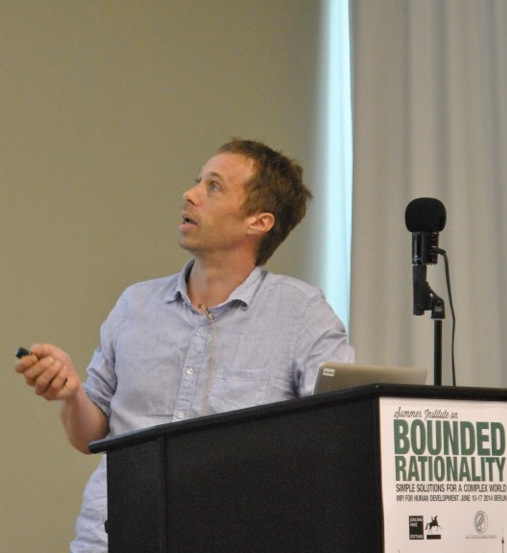

Assistant Professor of Cognitive Science and Artificial Intelligence
Tilburg Center for Cognition and Communication
Tilburg University, The Netherlands.
Adjunct Researcher
Center for Adaptive Behavior and Cognition
Max Planck Institute for Human Development, Berlin, Germany.
 How do humans and other animals function so effectively in such an uncertain world, and can an understanding of this ability guide the development of computational intelligence? I study these issues by examining how environmental uncertainty regulates decision making, learning, evolutionary and adaptive systems, and cultural evolution. I have made key contributions to the computational modeling of the evolution of language, bounded and ecological rationality, and instance-based learning. My book Introducing artificial intelligence provides an illustrated guide to the big ideas in artificial intelligence.
Before joining Tilburg University in 2016, I was a Research Scientist (2005-2016) at the Center for Adaptive Behavior and Cognition, Max Planck Institute for Human Development. Prior to that I was an ESRC Postdoctoral Research Fellow (2004-2005) at the Language Evolution and Computation Research Unit, The University of Edinburgh. I also studied at the University of Edinburgh, where I obtained a BSc. (Hons) in Artificial Intelligence and Computer Science (1996), an MSc. in Cognitive Science (1997), and a Ph.D. (2003) in Cognitive Science. Before starting my Ph.D. in 1999 I held a Research Scientist position at SHARP Laboratories of Europe, Oxford.
Selected Publications
- Moussaïd, M., Brighton, H., & Gaissmaier, W. (2015).
The amplification of risk in experimental diffusion chains.
Proceedings of the National Academy of Sciences of the USA, 112, 5631-5636. doi:10.1073/pnas.1421883112
- Gigerenzer, G. & Brighton, H. (2009).
Homo heuristicus: Why biased minds make better inferences.
Topics in Cognitive Science, 1, 107-143. doi:10.1111/j.1756-8765.2008.01006.x
- Brighton, H. Kirby, S. & Smith, K. (2005).
Language as an evolutionary system.
Physics of Life Reviews, 2, 177-226. doi:10.1016/j.plrev.2005.06.001
- Brighton, H. & Mellish, C. S. (2002). Advances in instance selection for instance-based learning algorithms. Data Mining and Knowledge Discovery, 6, 153-172. doi:10.1023/A:1014043630878